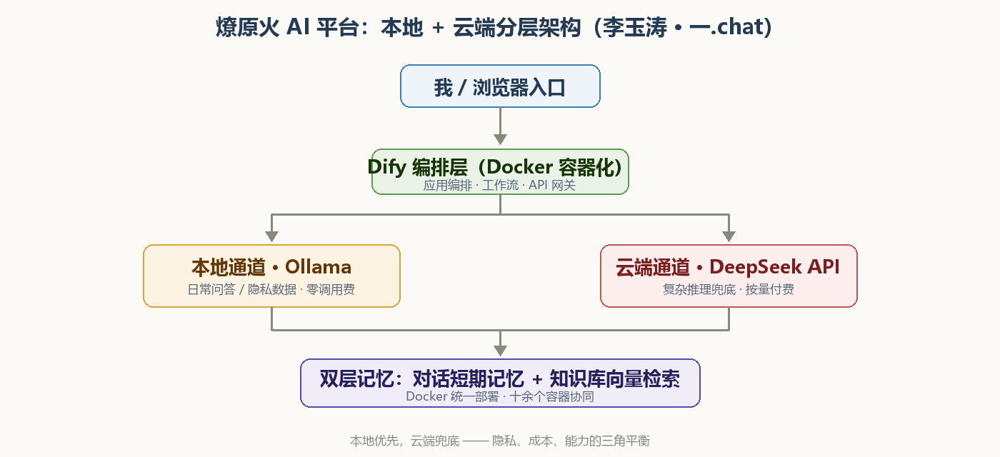

背景与目标
纯云端 API 成本不可控，纯本地模型又受显存和模型能力限制。项目把两类模型放入同一套路由体系：本地模型承担隐私和日常任务，云端模型负责复杂推理与兜底。
15 容器模型、编排、存储和前台服务分层
双通道本地 Ollama / 云端 DeepSeek 分流
双层记忆会话上下文与长期知识分离
关键做法
01
Docker 分层部署
使用 Compose 管理模型服务、Dify、数据库、缓存和前端入口，降低本地复现成本。
02
模型路由
根据任务、可用资源和成本策略选择本地或云端模型，避免所有请求都依赖外部 API。
03
RAG 知识库
将文档切分、索引、检索和生成拆分，保留引用来源，便于追踪错误答案。
04
长期记忆与上下文
短期会话和长期知识分开存储，控制上下文长度并减少无关记忆污染。
系统架构

Docker ComposeDifyOllamaDeepSeekRAGAgentPostgreSQLRedis
结果与验证
- 整理出 15 个 Docker 容器的可复现架构和依赖关系。
- 落地本地与云端双通道路由，支持按任务选择模型。
- 记录
OLLAMA_KEEP_ALIVE、num_predict和容器编排三个实际部署问题。 - 公开文章包含架构图、部署过程和可迁移的踩坑记录。